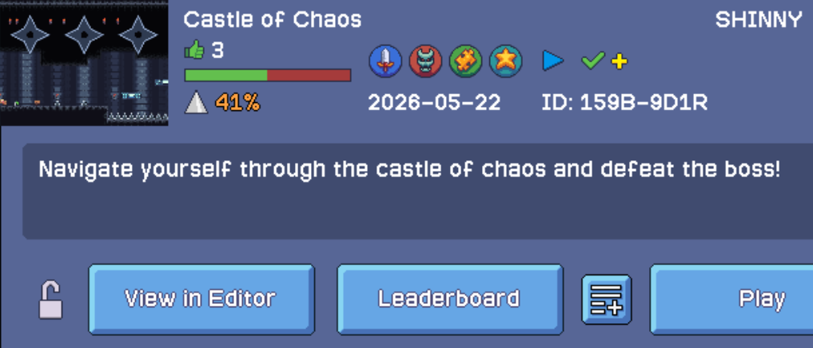
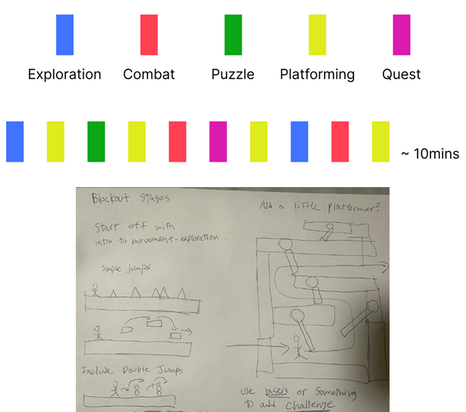
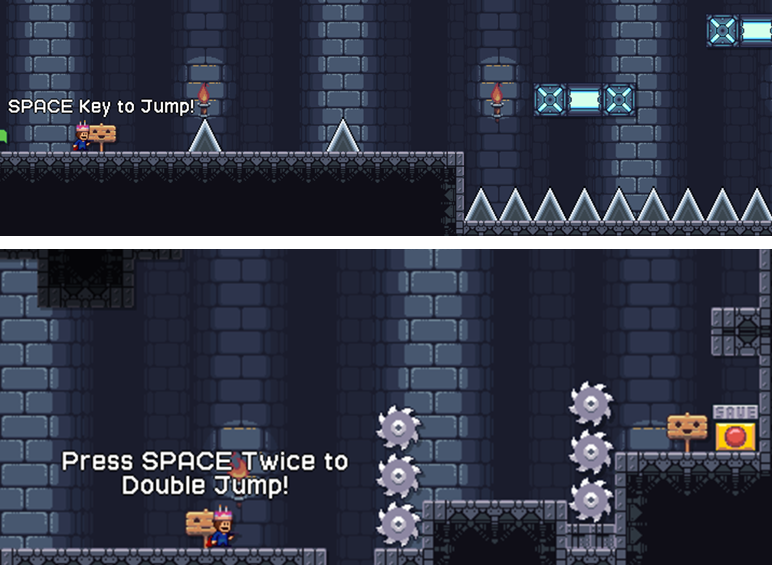
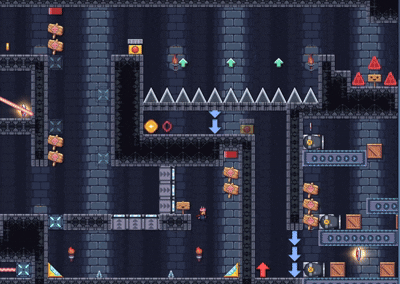
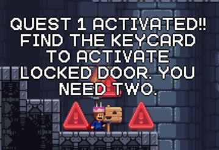
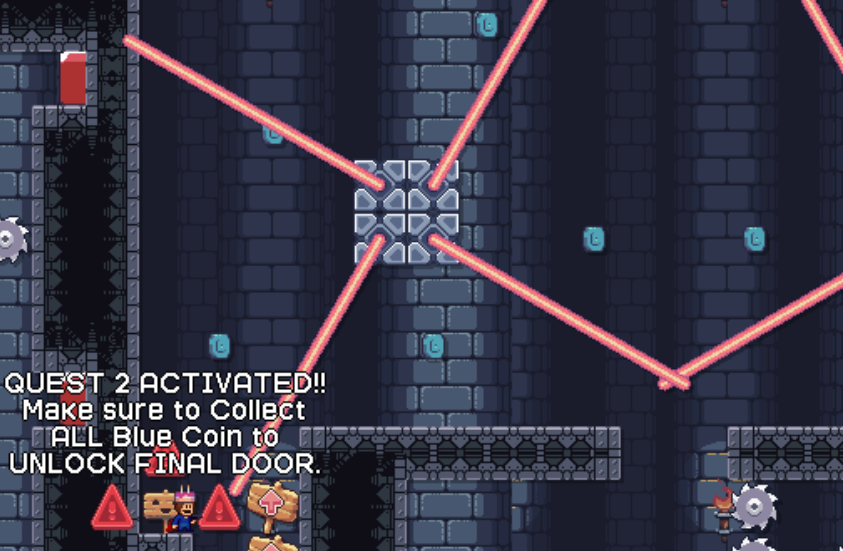
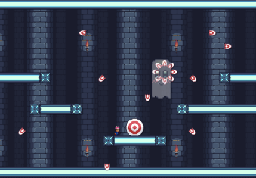
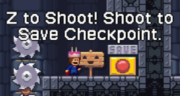
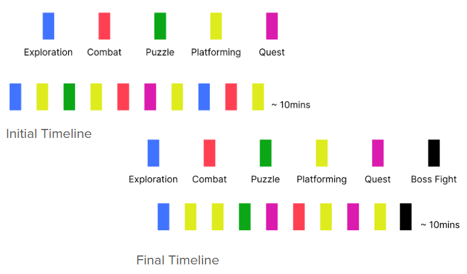
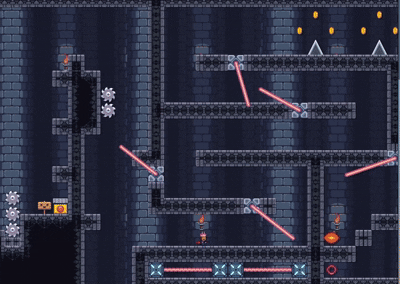

Castle of Chaos


Castle of Chaos is a 2D platforming game inspired by classic castle-themed adventure levels where players must overcome dangerous obstacles, enemies, and environmental challenges to progress through the stage. Using a variety of gameplay mechanics and in-game items, players must carefully navigate each section of the castle while adapting to new challenges and testing their timing, movement, and platforming skills to reach the end of the level.
• Solo Project
• Role: Level Designer & Game Designer
• Built in I Wanna Maker
• 3 Week Development

I decided to try something new by designing the level around gameplay beats to help structure the player experience. I created initial gameplay beats to determine the overall flow and pacing of the level while planning how different mechanics, obstacles, and challenges would be introduced throughout progression. Early planning focused on balancing challenge progression, mechanic variety, and player engagement before beginning the full level design process.
Before blocking out the level digitally, I also created rough sketches and layout concepts to visualize obstacle placement, gameplay sections, and overall level progression. These early sketches helped organize gameplay ideas and establish the structure of the player experience before implementation.


The opening section eases players into the core controls and movement before any real challenge is introduced. Simple platforming sequences and open spacing give players room to build confidence and get comfortable with the mechanics, ensuring the controls feel natural before the difficulty begins to increase.

A puzzle section was implemented to serve as a pacing shift, requiring players to shoot buttons to trigger platforms and use them to progress. This was designed to break up the action and encourage players to slow down and think before moving forward.

Two keycards are hidden throughout the level, both required to unlock access to the next section. Each keycard is placed behind a demanding platforming section, ensuring players are tested before they can progress. This was designed to reward skillful play while adding a layer of exploration and urgency to the level.

Quest 2 is implemented as a chaotic, fast-paced gauntlet where every coin must be collected to unlock the final door. The relentless platforming pushes timing and movement to their limit — but it's only the beginning of what's to come.

The level concludes with a boss encounter that combines dodging and precision shooting. The boss continuously launches projectiles at the player while separate targets are placed throughout the arena. Players must read the boss's attack patterns, dodge incoming projectiles, and precisely shoot each target to defeat it — demanding full mastery of the controls and mechanics introduced throughout the level.
A recurring piece of feedback from playtesting was the lack of checkpoints. Every playtester struggled with restarting from the beginning upon death, which disrupted the pacing and became a source of frustration. Based on this feedback, checkpoints were implemented after key challenge sections, allowing players to resume progress without losing everything.

The level evolved throughout development as design decisions were refined. The order of platforming sections was reorganized to better support pacing, and the boss encounter was a later addition to give the level a stronger sense of climax. The beats shifted week by week as the level took shape.

The final level brings together several unique features designed to keep the experience engaging and worthwhile. Each section introduces different mechanics and challenges, ensuring the gameplay stays fresh and varied throughout the level.
The progression leading into the boss fight was deliberately built up to communicate a sense of escalation. The increasing intensity and variety of challenges signal to the player that something bigger is coming, making the boss encounter feel like a natural and earned conclusion to the level.

Castle of Chaos is available to play on I Wanna Maker | Level ID: 159B-9D1R
©Shion Lovelace.
All content, logos, and trademarks are the property of their respective owners.